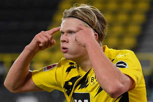

NEWS
Check out the latest news Chelsea players.
-
Give support to the Giroud who is leaving.
MORE
-

Will Holland really join Chelsea?
MORE
-
Harbertz, who scored at the crucial moment.
MORE
Top SECRET
How did Tomas Tuchel change Chelsea?
 (1).jpg)
Thomas Tuchel : The Magician
Since Thomas Tuhel's appointment, Chelsea have shown a completely different side.Lampard's Chelsea have mostly stuck to the 4231 formation, but Thomas Toohel's Chelsea completely revamp tactics. The main formation was changed to Back3 tactics (3412, 343).Furthermore, Tuchel's use of the player was also unconventional.If you look at the defense.
Christensen, who, if I may say so, has been an exceptional defender, is now showing a completely different side at Chelsea. Not only is he nicknamed "John Tenley" among fans, but he also sometimes tries long passes to help develop quickly, showing a fighting, so-called "mop defense" reminiscent of John Terry.
The last piece of Tuhel's Back3 was Chelsea captain Cesar Aspiricueta. He has often played as a right stopper (he has recently also played as a right wingback), showing stable build-ups like a midfielder, and often overlapping is impressive. In the case of Aspiricueta, he often starts at Lampard, and he's not bad.